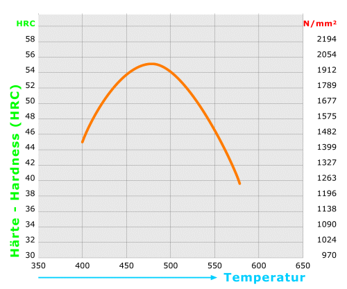
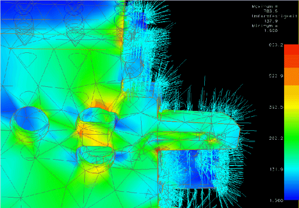
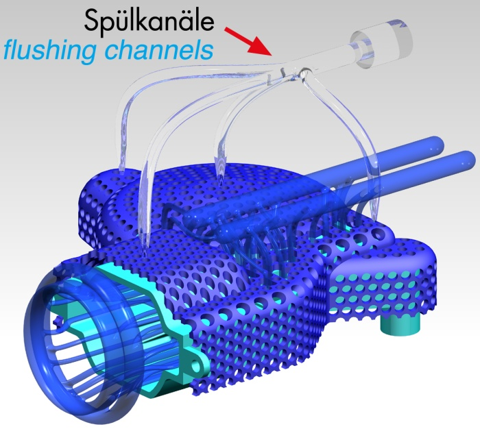
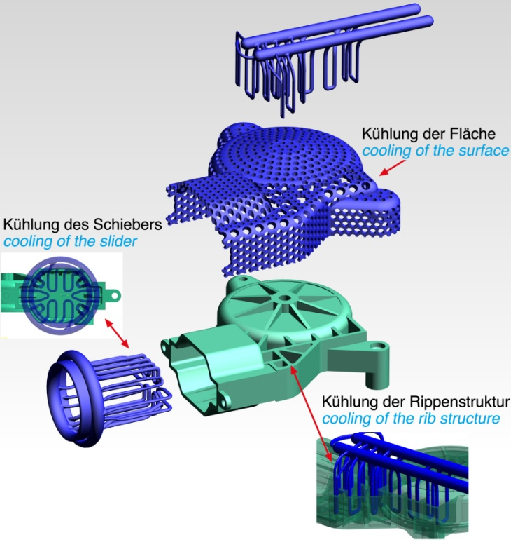

|
Makinelerinizin
ve üretilen parçalarýn teknik özelliklerinden kýsaca bahser
misiniz?
M3
Linear ve M1 adýný verdiðimiz iki adet makinemiz bulunmakta.
Bunlardan M3'de LaserCUSING® , 3D oyma ve markalama teknolojilerinin
üçü de ayný makinede alttaki modül deðiþtirilerek ayrý ayrý
kullanýlabilir. M1 makinesi ise sadece LaserCUSING® yöntemini
kullanmak isteyenlere uygun fiyatlý bir alternatif yaratýyor.
Þu an takým çeliði, paslanmaz çelik ve hýzlý prototip üretimi
için kullandýðýmýz bir bakýr alaþýmlý çeliðimiz bulunmakta.
Bunlardan takým çeliðimiz 54 HRC'ye kadar yüksek sertliklere
ulaþabilmekte.

Ayrýca
parçalarýmýzýn hepsinde % 99,5 oranýndaki yoðunluklara sahip
olduðumuzdan, orjinal çelik malzemelerinin mukavemetlerine
ulaþabiliyoruz. Bunlardan baþka dökme kalýplarýnda da kullanýlabilen
bir çeliðimiz mevcut. Ayrýca aluminyum, titanyum ve KromKobalt
malzemelerimizin de Ar-Ge süreçleri devam etmekte. Laboratuvar
makinemizde bu malzemelerden ürettiðimiz birçok parçamýz bulunmakta.
Bu parçalara ve malzemelerin tüm özelliklerine web sitemizden
ulaþýlabilmesi mümkün: www.concept-laser.de
Yüzeylere
kalýplarda kullanýlmadan önce freze veya baþka bir talaþlý
imalat yöntemiyle son bir iþlem uygulanýyor. Ayrýca daha önce
bahsettiðim "combined processing" yöntemi sayesinde
yapýlan deneylerde Ra=1-1,4µm'ye varan çok yüksek yüzey kaliteleri
elde edilebilmiþtir.
Karmaþýk
geometrili soðutma kanallarýnýn tasarýmýný nasýl yapýyorsunuz?
Bu konuda özel bir teknik ve/veya CAD yazýlýmý kullanýlýyýr
mu? Yoksa çoðunlukla tecrübe ve tahminlere mi dayanýyor?
Oncelikle
kaliphanemizde tasarim icin genelde UG veya CATIA kullaniliyor.
Sogutma kanallarinin tasarimi icin oncelikle normal kalip
tasariminda oldugu gibi kritik bolgelerin belirlenmesi gerekiyor.
Bu bolgelerde parcanin buyuklugune de gore sogutma kanallarinin
sekli ve boyutlari belirleniyor. Ornegin resimde gorulen elektrikli
supurge kalibinda, cabuk sogutulmasi gereken yuzeylerin olabildigince
yakinina kadar bircok sogutma kanali yerlestirildigi gorulmekte.
Bu sogutma kanallarinin yuzeye minimum yakinligi gibi bazi
limitleri olmasina karsi, yontemimiz sayesinda istediginiz
kadar karmasik ve cok sayida kanal yerlestirebiliyorsunuz.
Su ana kadar 0,8 mm ve hatta daha yakina kadar sogutma kanali
yerlestirdik. Tabii bu kanallari dediginiz gibi en iyi akisi
ve sogutmayi saglayacak sekilde kullanmak cok onemli. Bunun
icin kaliphanemizdeki proje yoneticilerinin tecrubelerine
dayanilarak konstruksiyon yapiliyor. Bunun nedeni ise piyasada
bu analizi tam anlamiyla yapacak bir programin olmamasi ve
analizlerin bu nedenle zaman kaybettirmesi. Ancak olusturulan
kaliplarin sekilde de goruldugu gibi ne kadar efektif oldugunu
gosteren deneylerimiz de mevcut.

Isý
transfer analizlerinde bir CAE yazýlýmý kullanýyor musunuz?
Isi transfer analizlerini de tecrubelere dayanarak yapiyoruz.
Cunku konuya artik hakim oldugumuz icin proje yoneticileri
analizi tecrubeleriyle programlardan daha hizli bir sekilde
cok iyi bir sekilde yapabiliyorlar. Bunun icin parca boyutuna,
sogutma kanallari ve bunlarin yuzeye yakinligina ve plastik
malzemenin ozelliklerine gore bircok seye dikkat edip kullandiklari
yaklasik formuller de var. Bunun yerine su an icin bu isi
hizli bir sekilde yapacak ve en uygun sogutma kanalini kisa
surede belirleyebilecek bir program bulunmamakta. Ama teknoloji
cok yeni oldugu icin belki ileride bu gibi programlar piyasaya
cikabilir.
Otoinþa
teknolojisi ile direkt metal kalýp inþasýnda Avrupa ve Dünya'daki
geliþmeler ne yönde? Sanayicimize sunduðu potansiyel avantajlar
nelerdir? Bu yeni teknolojilerin ülkemizde de önemli bir yere
sahip olmasi için engeller nelerdir?..
Ýlk
baþlarda soðutma kanallarýyla plastik parça soðuma süresini
yüzde 10 ile 20 arasýnda azaltmamýz bile büyük bir baþarý
olmuþtu. Daha sonra bunlarý optimize etmeye baþladýkça yüzde
60'ý gecen oranlarý yakalamanýn mümkün olduðunu gördük. Böylece
parçalarýn üretim hýzý (cycle time) yüzde 20 civarýnda azalmaktadýr.
Bu konuda da kalýpçýlýk firmamýzýn farklý patentleri oldu.
Örneðin artýk basit soðutma kanallarýýn yerine tüm yüzeyi
soðutabilen teknikler geliþtirildi. Bu bize ve Concept Laser
makinesini kullanan firmalara sektörde inanýlmaz avantajlar
saðladý. Örneðin Çin'deki kalýpçýlar nerdeyse bizim çeliði
aldýðýmýz fiyata kalýp üretirken, biz "teknolojik kalýp"
üreterek, imalat sürelerini düþürmekle kalmadýk, parça baþýna
düþen maliyeti de yüksek oranda düþürdük. Baþka bir örnek
olarak da kalýplarýn küçültülebilmesini gösterebiliriz. Artýk
üretim süresi oldukça düþtüðünden, bir kalýpta ayný anda basýlmasý
gereken parça sayýsý da azaltýlabilir. Bu sayede hem kalýp
maliyeti düþürülmekte, hem de ayný parça daha basit enjeksiyon
makinelerinde basýlabilmektedir. Soðutma kanallý kalýplarýmýz
senelerdir sorunsuzca çalýþmaktadýr. Bu hem bu kalýplarý kullanan
müþterilerimizin memnun olmasýný saðladý, hem de bu teknolojiyi
kullanmak isteyenlerin sayýsýný artýrdý. Almanya'da 5000'in
üzerinde kalýpçý olduðunu düþünürsek, sadece kalýpçýlýktaki
pazarýn büyüklüðü görülüyor. Kalýphanemizde yapýlan kalýplarýn
hemen hemen hepsinde soðutma kanallý parçalar bulunuyor. Teknolojiye
verdiðimiz bu önem sayesinde Hofmann kalýpçýlýk firmasý geçen
aralýk ayýnda Almanya'da 2005 yýlýnýn en iyi kalýpçýsý seçildi.
Benim
fikrim bu teknoloji Avrupa'da oturdukça, ülkemizde de kalýpçýlarýmýz
bu yöntemi kullanmaya baþlayacaklardýr. Çünkü bahsettiðim
gibi bu yöntem ilerde hemen hemen bütün kalýplarda kullanýlacak.
Bu teknolojiyi kullanmayan kalýpçýlarýn ilerisi için soðutma
kanallý kalýplara karþý durabilmesi çok zor görünüyor. Tabii
þu an için bu teknoloji daha çok karmaþýk parçalarýn kalýplarýnda
kullanýlýyor. Ancak geliþen teknolojiye Türk kalýpçýlýðý da
olabildiðince çabuk ayak uydurmalýdýr.
Geliþen
bu yeni kalýp imalat teknolojileri ýþýðýnda ülkemizdeki sanayicilere
ve eðitim kurumlarýna neler tavsiye edersiniz?..
Sanayiciler
için tavsiyem Türkiye içinde ve hatta global pazarda rekabet
için bu teknolojileri gözardý etmemeleri. Söylediðim gibi,
kalýpçýlýkta "cycle time"ýn bu þekilde büyük oranlarda
düþürülmesi Türk kalýpçýlýðýna da güç getirecektir. Bu sadece
kalýpçýlar için deðil ayný zamanda fonksiyonel parça yapan
otomotiv ve benzer sektörler için de geçerli. Ayný zamanda
diþçilikte de KromKobalt alaþýmlarýnýn üretiminde ileride
bu teknolojinin dökme yöntemlerinin yerini alacak olmasý bile
mümkündür.
Eðitim
kurumlarý da henüz gecikmeden bu gibi teknolojilere yönelik
araþtýrma geliþtirme faliyetlerini baþlatmalýdýrlar. Almanya'daki
gibi sektörün yeni teknolojileri öðrenmesindeki destek daha
çok üniversitelerden gelmelidir. Ayrýca genel olarak lazer
teknolojilerine yönelik araþtýrmalar da gerek eðitim kurumlarýmýz
ve gerek firmalarýmýz tarafýndan yapýlmalý ve hatta üniversitelerde
imal usullerinde, lazer gibi gelecekte çok kullanýlacak yöntemler
derslerde de ögretilmelidir. Bu konularda tüm sanayi kuruluþlarýna
ve üniversitelere de istedikleri her an elimden geldiðince
yardým edebileceðimi belirtmek isterim.


Kariyerini bu yeni imalat teknolojileri doðrultusunda yapmak
isteyen gençlere neler tavsiye edersiniz?
Öncelikle
en önemli þey gerek stajlarda gerek üniversite hayatýnda teoriden
çok, üretim yöntemlerini görerek öðrenmeleri. Tabii kendi
tecrübelerime dayanarak bunu olabildiðince yeni teknolojiler
kullanan ve hatta geliþtiren firmalarda yapmalýlar. Bu sayede
kýsa zamanda çok þey öðreneceklerdir. Bunun için imkanlarý
elverdiði ölçüde Almanya gibi makine fakültelerinin birer
büyük þirket gibi çalýþtýðý ve birçok yeni teknoloji ürettiði
bir ülkede staj yapmalarý ve hatta master yapmalarýný öneririm.
Almanya'da birçok fakültede öðreniminiz süresinde çalýþýrsanýz,
eðer hevesiniz de varsa, kýsa bir sürede çok þey ögrenebileceðinizi
ifade etmek isterim. Ýnanýn birçok yeni teknoloji, üzerinde
çalýþmanýzý bekliyor. Yapmanýz gereken sadece bunun için adým
atmak.
*
Not:
Otoinþa
teknolojileri 1986'da ABD'nde ticari olduðu ilk yýllarda
sadece hýzlý model ve prototip imalatý amacýyla geliþtirilip
kullanýldýðýndan, bu teknolojiler, kapsamý ve anlamý bakýmýndan
çok uygun olan "autofabrication" (otoinþa)
veya "automated fabrication" yerine çoðunlukla
"rapid prototyping" (hýzlý prototipleme)
adýyla anýlmýþtýr.
Sonralarý,
geliþen teknoloji ve açýlan yeni uygulama sahalarý (rapid
tooling - hýzlý kalýp imalatý gibi) ile birlikte artýk bu
ismin yetersiz ve dar kapsamlý kaldýðý ilgili çevrelerce de
kabul edilmesine raðmen ilk yýllarda verilen bu isme piyasa
alýþmýþ olduðu için deðiþtirmek mümkün olmamýþtýr. Otoinþa
teknolojileri için daha birçok farklý isimlendirme ve kýsaltmalar
kullanýlabilmektedir; Bunlardan bazýlarý, "additive
fabrication", "additive manufacturing",
"Solid Freeform Fabrication, SFF", (katý,
serbest þekilli inþa), "Free Form Fabrication, FFF",
"Layered Manufacturing" (katmanlý imalat),
"3D Printing" (3 Boyutlu Yazýcý) þeklindedir...
Daha fazla bilgi için:
|